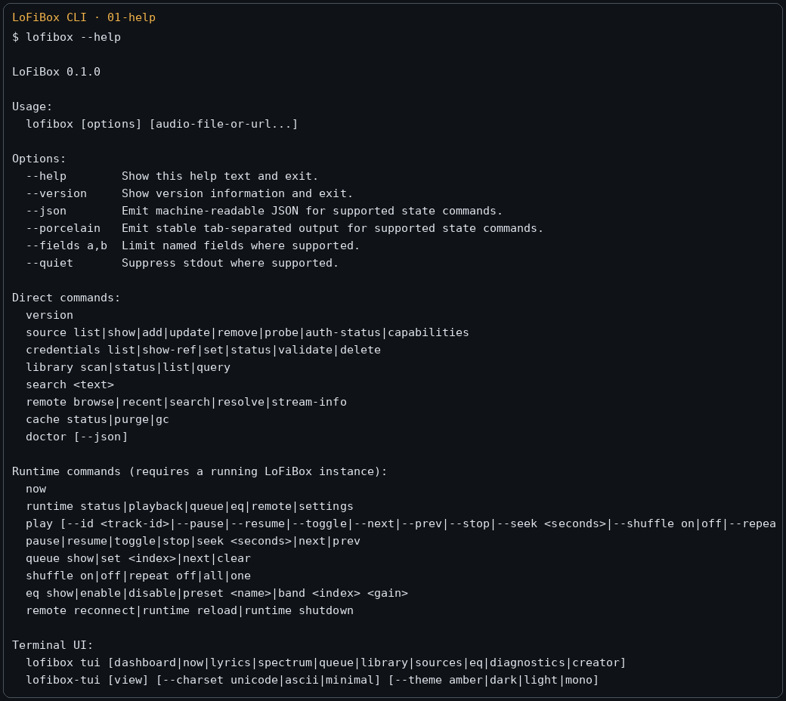
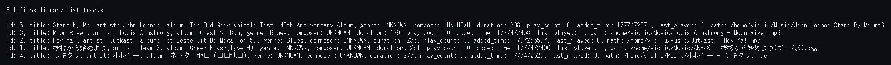
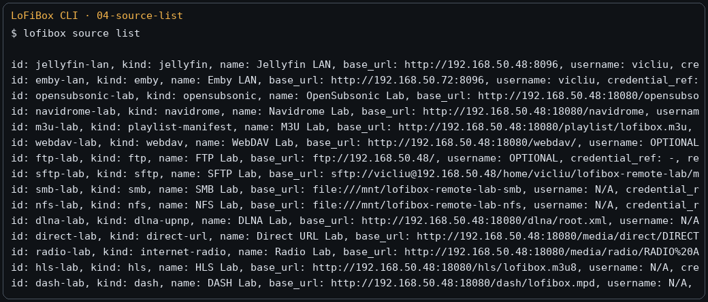

Command Line
CLI: For People and Machines
The lofibox CLI has two layers. Direct and durable commands operate on configuration, credential references,
media libraries, cache, and other persistent objects. Runtime commands connect to a running LoFiBox instance to read playback state
or submit playback control. Output is human-readable by default, while --json, --porcelain,
and --fields are for scripts and Agents.

Stable Exit Codes
| Exit code | Meaning | Typical recovery |
|---|---|---|
| 0 | Success | Continue to the next step. |
| 2 | User input error | Read structured error / help schema and fix arguments. |
| 3 | Resource not found | Check media id, profile id, cache key, or path. |
| 4 | Missing credentials or authentication failure | Check the credential reference and rewrite the secret through stdin. |
| 5 | Network or runtime transport failure | Check socket, remote service, and network connectivity. |
| 6 | Playback backend failure | Run doctor and check PipeWire/ALSA/output device state. |
| 7 | Persistence failure | Check XDG directories, permissions, disk space, and run persistence repair. |
Agent-friendly Discovery
Autonomous Agents should not guess from help text. Use machine-readable command discovery, field schemas, structured errors, and nested field filtering.
lofibox commands --json
lofibox help --json
lofibox help runtime playback --json
lofibox runtime playback --schema
lofibox runtime playback --fields status,title,artist,elapsed,duration --json
lofibox now --fields playback.status,playback.title,queue.active_index --jsonPlayback and Runtime State
Playback commands operate on the playback session. Query commands can fetch only the fields they need, avoiding large queue payloads.
lofibox now
lofibox now --json
lofibox runtime playback --json
lofibox play "/home/vicliu/Music/Outkast - Hey Ya!.mp3"
lofibox play --pause
lofibox play --toggle
lofibox play --next
lofibox play --seek +10s
lofibox play --repeat off
lofibox play --shuffle on
lofibox now --json: the same runtime snapshot also powers TUI and future Agents.Queue
Queue is its own capability domain. It supports "queue without immediately playing" as well as viewing, removing, moving, setting the active item, and saving/loading named queues.
lofibox queue show
lofibox queue add "/home/vicliu/Music/track.flac"
lofibox queue add --id 42
lofibox queue remove 3
lofibox queue move 5 2
lofibox queue set 1
lofibox queue clear
lofibox queue save evening
lofibox queue load eveningLocal Library and Search
Library commands operate on the local index; search is the unified search entry across local and remote sources. Keep them separate instead of folding them into one oversized command.
lofibox library scan --root ~/Music --incremental
lofibox library status --json
lofibox library list tracks
lofibox library list albums
lofibox library query tracks --artist "Outkast"
lofibox library query tracks --recently-added
lofibox search "hey ya"
lofibox search "utada" --local
lofibox search "radiohead" --source jellyfin-home
Source and Remote
source owns configuration, authentication, capabilities, and lifecycle.
remote owns browsing, search, recent items, favorites, and stream resolution after a connection is established.
lofibox source list --json
lofibox source add jellyfin --id home --name "Home Jellyfin" \
--base-url https://media.local:8096 \
--username vicliu \
--credential-ref jellyfin-home
lofibox source probe home
lofibox source capabilities home
lofibox remote browse home /albums
lofibox remote search home "radiohead"
lofibox remote resolve home item-123
lofibox remote stream-info home item-123
Credentials
Credentials and profiles are stored separately. Do not pass passwords or tokens as command-line arguments by default; stdin is preferred.
lofibox credentials list
lofibox credentials show-ref jellyfin-home
lofibox credentials set jellyfin-home --username vicliu
printf '%s' "$JELLYFIN_PASSWORD" | lofibox credentials set jellyfin-home --password-stdin
printf '%s' "$NAVIDROME_TOKEN" | lofibox credentials set navidrome-home --token-stdin
lofibox credentials validate jellyfin-home
lofibox credentials delete old-refEQ / DSP
lofibox eq show
lofibox eq enable
lofibox eq preset list
lofibox eq preset apply "Bass Boost"
lofibox eq band 31 +3
lofibox eq preamp -4.5
lofibox eq replaygain track
lofibox eq limiter on
lofibox eq loudness on
lofibox eq balance -10
lofibox eq bind device default "Podcast / Speech"Metadata / Lyrics / Artwork / Fingerprint
ID3 completion, lyrics, artwork, and fingerprints are split into lookup, diff, apply, and writeback. This lets users inspect candidates and changes before accepting them and avoids automatic flows mutating music files.
lofibox metadata lookup "/music/track.mp3"
lofibox metadata diff "/music/track.mp3"
lofibox metadata apply "/music/track.mp3"
lofibox metadata writeback "/music/track.mp3"
lofibox lyrics lookup "/music/track.mp3"
lofibox lyrics apply "/music/track.mp3"
lofibox lyrics writeback "/music/track.mp3"
lofibox artwork lookup "/music/track.mp3"
lofibox fingerprint generate "/music/track.mp3"
lofibox fingerprint match "/music/track.mp3"Cache / Persistence / Diagnostics
lofibox cache status
lofibox cache list
lofibox cache purge artwork
lofibox cache gc
lofibox persistence status
lofibox persistence save
lofibox persistence repair
lofibox paths --json
lofibox doctor --json--json and --fields; write secrets through stdin;
for commands that mutate state, inspect mutates and requires_runtime in the command schema first.